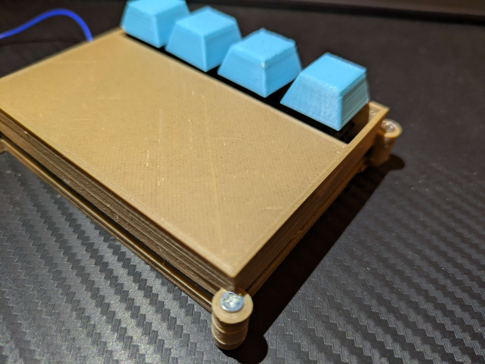
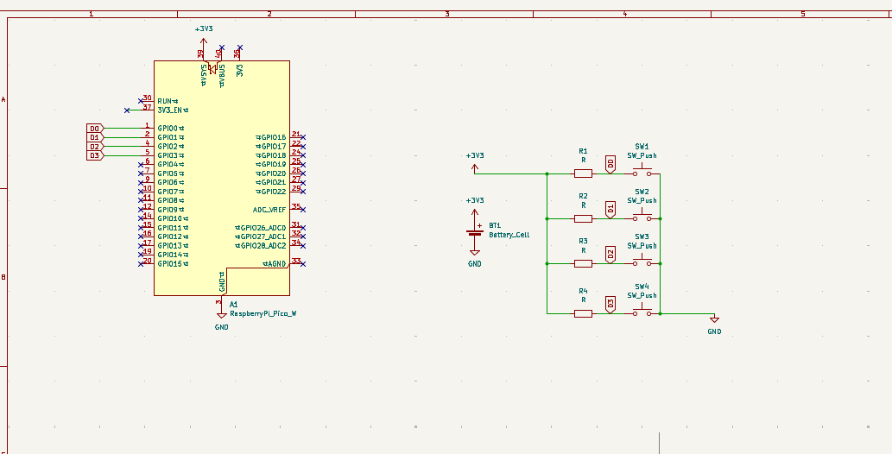
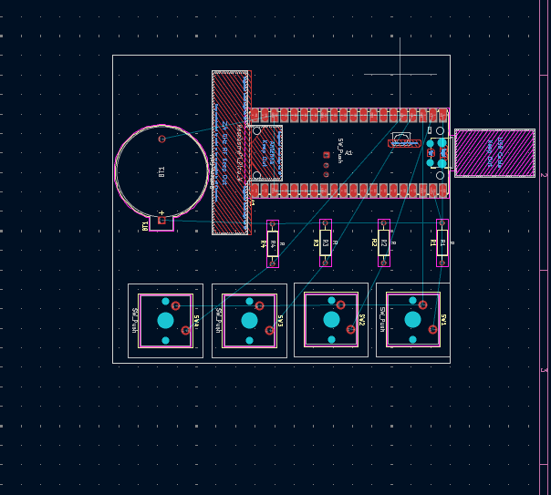
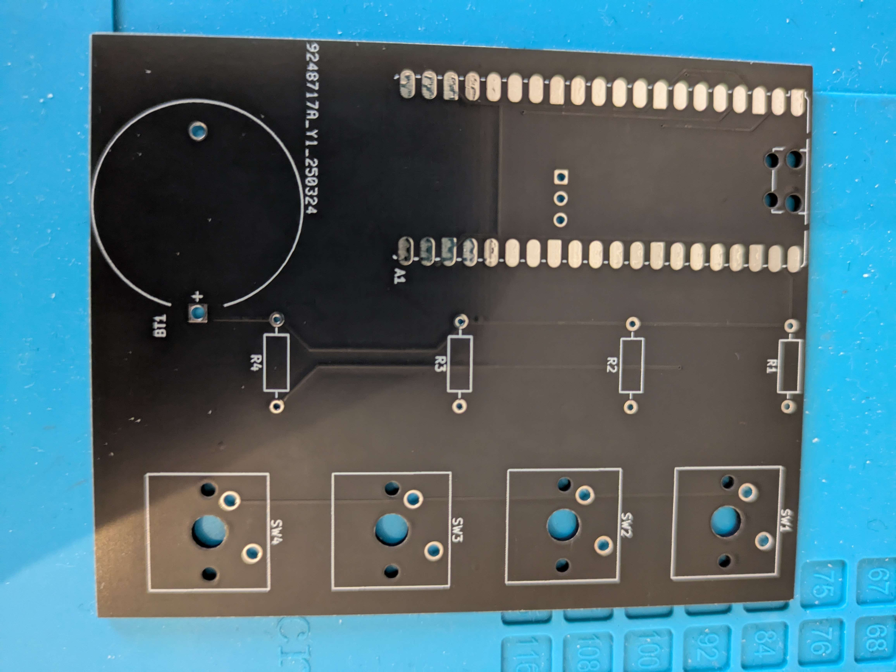
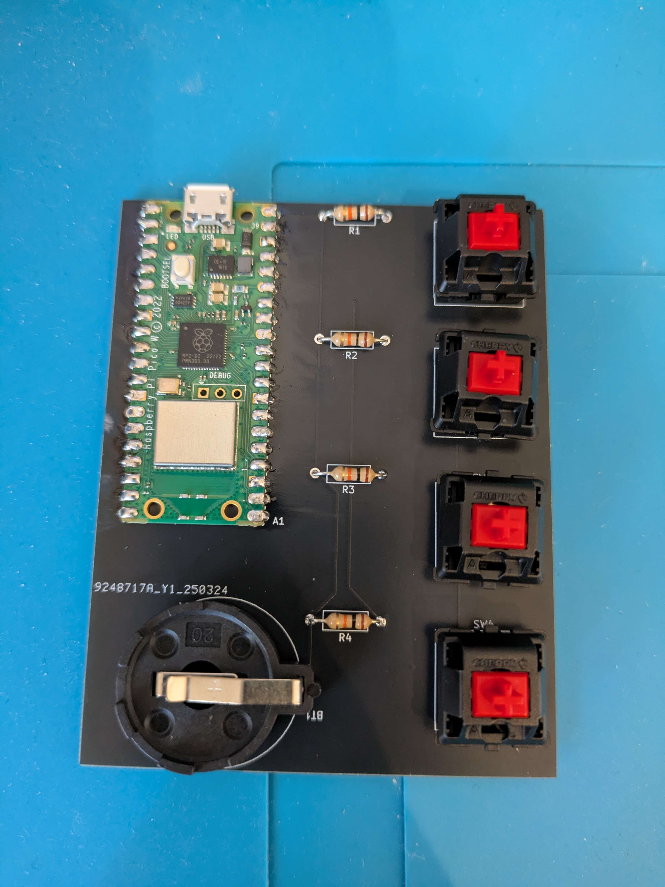
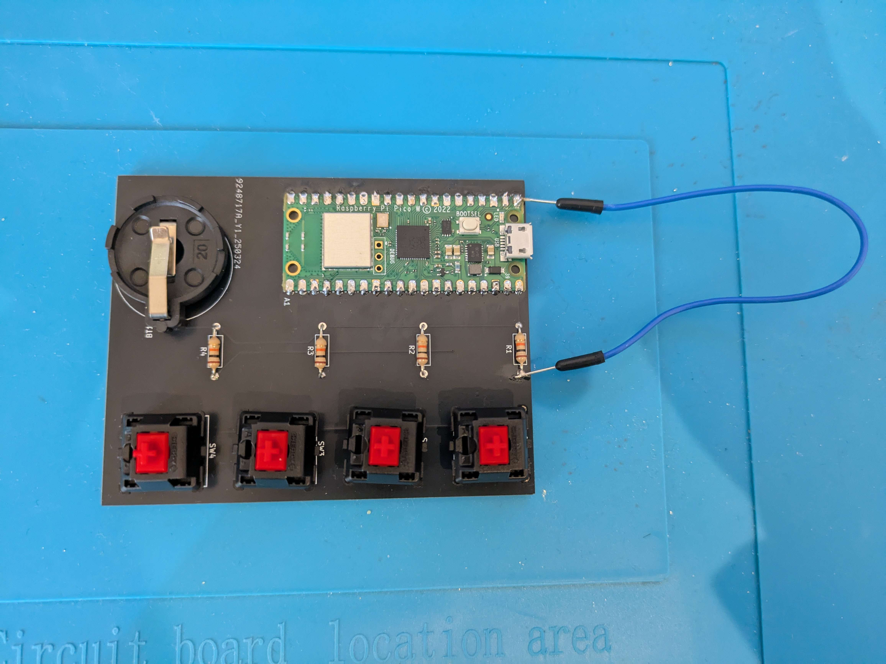
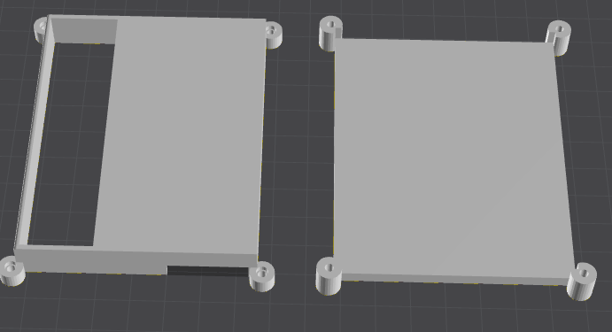
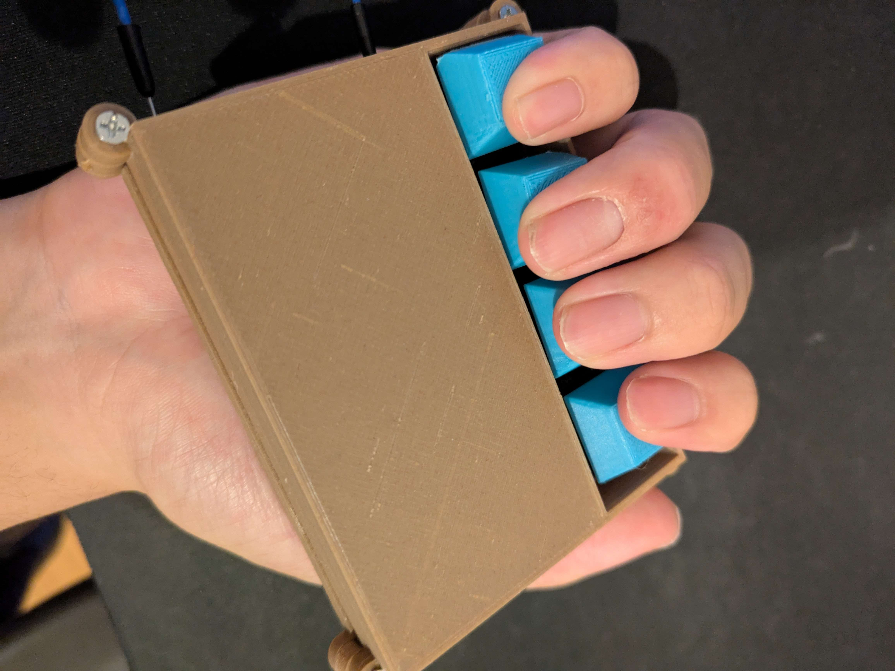

最近VRにとても興味が出ているけどVRゴーグルは高いし、何か関われるものないかなーと思い、そうだ！！モーションキャプチャー的なものを作ろうと思った。
制作１（基盤）
まずはどんなものを作るか考える。そして今回は指の動きをキャプチャーできるようなものを作ろうと考えた。


今回は無線機能を搭載したかったのでraspberry pi pico wを使用することにした。また、今回はキーを４つしか使わないのでかなりシンプルな基盤になった。
この時はまだ、あんなことになるなんて知る由もなかった...
制作２（回路づくり）

頼んだ基盤が届いたので、早速はんだ付けをして回路を作成していく。今回はキースイッチ、抵抗、電池ケース、raspberry pi pico wを秋月電子で購入した。

無事に回路の作成が終わったので次はいよいよプログラムを組んでキーボード化させていきます。
制作３（プログラミング）
今回は自分の中では一番使えるPythonを使ってプログラムを組んでいく。と言っても自分はキーボード作成はガチの初心者なので友人の助けや様々なサイトを見て組むことができた。
というわけでいよいよキーボードの準備が整ったので起動してみよう！！！
......なんか......キースイッチ1つ機能しないんだけど........
ここで初のアクシデント発生まさかの基盤の設計ミス（D0と抵抗がなんかつながってなかった）どうしよう、基盤をもう一度発注しようか、でもこんな１本のミスごときに発注するのはなぁ
もういっそジャンパ線つなぐか！！！（開き直り）というわけで

とても良い見た目とは言えないけどまぁ自分用だし初めてだし初心者だしいっか
制作３（完成）
というわけで無事キーボード機能が完成したというわけで、ここからケースやらキャプチャーを判定するサイトを作っていきます。
ケース、キーキャップは家にある3Dプリンター(Ender3 V3 SE)を使用して印刷しました。かなりミスって計8回くらい印刷しました。（かなり時間かかった）

組み立てしてついに本体完成！（ウエハース見たいでおいしそう）ちなみに固定用のねじは百均で本当に適当なものを買ってきたらジャストフィットしました（最高）
次はサイトを作るのですが、これにもかなり苦戦しました。最近競技プログラミングくらいしかやっていなかったのでhtmlやJSにほとんど触れられていなかったので
また友人の助けで作成することができました。
サイトのリンクはココをクリック！
このサイトはW,A,S,Dを色々な組み合わせでなんかいろいろ表示されるサイトです。大体の画像が手書きのひどい物になっていますが、そこらへんはどうか気にしないでください。お願いします。
というわけでついに自分のやりたいことが完成しました。
使用例
この完成した物をどう使うかというとまずこのように持ちます。

このキーボードにはそれぞれW,A,S,Dが割り当てられているので、画像のように持って指を曲げたり伸ばしたりすれば、パソコン上でモーションキャプチャーできるという訳なのです。
考察
この疑似モーションキャプチャーを実際に作ってみて数十分使用してみましたが、まず持ちにくいので使いにくいです。そのため、通常のモーションキャプチャーに比べ、安価で制作することができますが、 やはり使用感は敵いませんね。そして今度は割り当てを変更してゲームで使用してみましたが、疑似とはいえ射撃ゲームでは銃のトリガーを引くような感覚でできたのでかなり満足できました。
まとめ
今回は疑似モーションキャプチャーを頑張って作ってみました。完成度は過去に作ったものの中で最高でした。また、今回制作にかかった費用ですが、約3000円です。かなりかかったと思っていましたが、 集計してみたら以外に安くすみました。みなさんもぜひキーボードを基盤から作ってみましょう。
おまけ

キーキャップ印刷時にプリンター不良によってできた現代アート